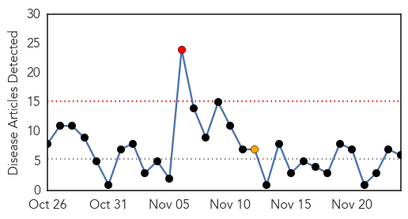
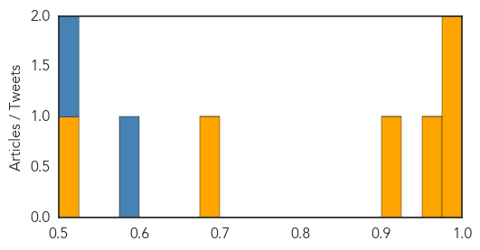
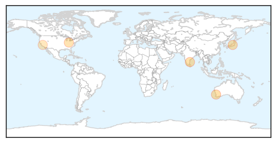

Cholera
30-Day Web Trend
1 alerts, 1 warnings

30-Day Twitter Trend
0 alerts, 0 warnings

Article Locations

Article Confidences
Top Articles:
- 0.994
- H5N1: Haiti: 64 cholera cases, 15 deaths in Anse-à-Pitres (updated)
- 0.982
- WHO vaccination campaign in Iraq
- 0.968
- Over 20 cases of jaundice reported in Mysuru
- 0.906
- Suspected cholera kills two in Bainet
- 0.684
- Learning from Jajarkot- Nepali Times
- 0.521
- Cholera-hit Tanzania cancels independence day celebration
Top Tweets:
- 0.593
- RT: Cholera in Haiti: 9041 deaths have been registered and more than 750000 have been sickened in its grip https://t.co/sdfdEPxS…
- 0.509
- A classification of situations for 5 types of cholera epi & recommendations for use of cholera vaccine. https://t.co/OsTN44eXm2
Swine Flu
30-Day Web Trend
0 alerts, 0 warnings

30-Day Twitter Trend
0 alerts, 0 warnings

Article Locations
Article Confidences

Top Articles:
- 0.999
- Is the nasty bug hitting Britain the return of swine flu? Doctors report seeing patients who are experiencing severe symptoms
- 0.988
- Officials review H1N1 control measures in TN
- 0.962
- H1N1 vaccine production far less than forecast
- 0.907
- Study Identifies Genetic Risk for Hyperinflammatory Disorder From Viral Infection
- 0.764
- Popularity can come at a price
Top Tweets:
-
No tweets found for Nov 24, 2015